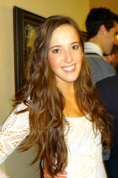

Pledge Class of 2012
| Delaney Chambers Physics '16 |
Shanna Chan Architecture '15 |
CeeCee Chang Biology & Psychology '16 |
Emma DiAntonio  Mechanical Engineering '16 |
| Emily Evans Electrical & Computer Engineering '16 |
Jacquelyn Ferguson Biological Sciences '16 |
Rho Sigma Cognitive Science '16 |
Kendra Ho Architecture '15 |
| Darun Kwak Finance '16 |
Irene Lee Mechanical Engineering & Design '16 |
Jessica Liu Architecture '16 |
Alexandra Merski Design '15 |
| Rachel Miller Information Systems '14 | Pheobe Ng Professional Writing '15 |
Mariah Ondeck Chemical & Biomedical Engineering '15 |
Prathibha Rama Business '16 |
Annette Ritchie Materials Science '16 | Corinne Rockoff International Relations '14 |
Samantha Sanstrom Civil & Environmental Engineering '16 |
Suruchi Sheth Business Administration '16 |
| Alexa Smith Undeclared H&SS '16 | Mya Snyder Mechanical Engineering '16 |
Rachel Sung Architecture '16 |
Pooja Tripathi Business Adminstration '14 |
| Gemma Wallnau Chinese Studies '15 | Emily Wells Decision Science '16 |
Rebecca Wolfinger Electrical & Computer Engineering '16 |
© Kappa Alpha Theta • Gamma Theta Chapter • 2013